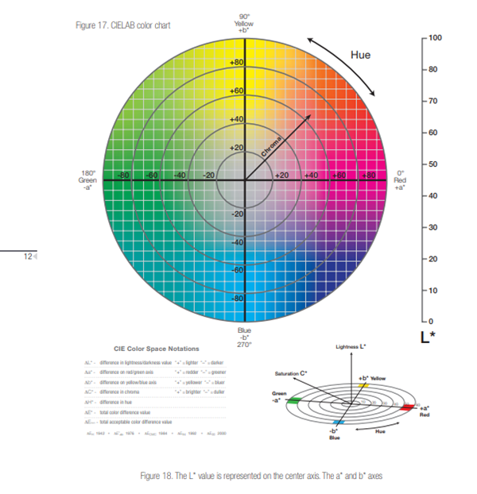
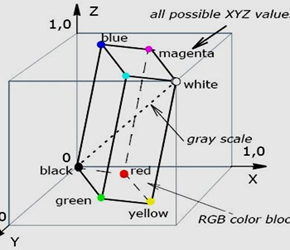

LAB: luminance, and green-red and blue-yellow color components
LAB မှာ အပိုင်း (၃)ပိုင်းပါပါတယ်။ L* ရယ်၊ a* ဆိုတဲ့ အစိမ်း/အနီ အပိုင်းရယ်၊ b* ဆိုတဲ့ အပြာ/အဝါ အပိုင်းရယ်ဆိုပြီးပါတယ်။ မြေပုံတွေမှာလို longitude,latitude ပြီး altitude ဖတ်သလိုမျိုးပဲ L*a*b* color တန်ဖိုးတွေကို ကြည့်ပြီး color တွေကို ဖတ်ရတာပါ။

L*: Lightness
a*: Red/Green value
b*: Blue/Yellow Value
a* axis က ဘယ်ကနေညာကို သွားပြီး +a* တန်ဖိုး -a* တန်ဖိုးအနည်းအများအလိုက် color intensity က ကွဲပြားနေမှာပါ။ အောက်ကပုံကို ကြည့်ခြင်းဖြင့် LAB Color space ဘယ်လိုလုပ်တယ်ဆိုတာသိနိုင်ပါတယ်။ chart ရဲ့ center က color တန်ဖိုးက gray ပါ။ L* axis ကအထက်ကိုတက်လေ ဖြူလေဖြစ်ပြီး origin အမှတ်မှာ အမဲပါ။ Photoshop တို့ လို photo editing လုပ်တဲ့အခါမှာသုံးပါတယ်။ color space က RGB color ထက်ပိုကြီးတော့ အရောင်အသွေးစုံအောင် edit ပိုလုပ်နိုင်ပါတယ်။

ပါတဲ့ color က gray အရောင်ကနေ ဘယ်လောက်တန်ဖိုးကွာဝေးလည်းပြပေးပါတယ်။ ဥပမာ သင့်ရဲ့ပုံက saturation တန်ဖိုးအရမ်းနည်းရင် Gray ဖြစ်သွားမှာပါ။ Lightness အပိုင်းမှာတော့ ပုံတစ်ပုံက အဖြူ အရောင်လိုက်ပြီး တန်ဖိုးအနိမ့်အမြင့်ပြောင်းတာကို ပြောတာပါ။ Lightness များရင် ပုံက ဖြူစွတ်သွားပါလိမ့်မယ်။ Value ကတော့ အမဲရောင်နဲ့ လိုက်ပြီး ပြောင်းလဲလာတဲ့ color intensity တန်ဖိုးကိုပြောပြတာဖစ်ပါတယ်။ Value နည်းလေ အမဲရောင်ဘက်လိုက်လေပါ။
XYZ: color in the x,y and z dimensions color တွေကို 3D dimensions နဲ့ ဖော်ပြထားတာပါ။ RGB colors တွေမှာ ကျွန်တော်တို့မြင်ရတဲ့ အရာထက်ပိုပြီး မသွားနိုင်တဲ့ saturation threshold တစ်ခုရှိပါတယ်။ XYZ တော့ အဲ့ threshold ထပ်ကျော်အောင် သွားနိုင်ပါတယ်။ ဒီနေရာမှာ ကျွန်တော်တို့ ဘာကြောင့်များ Threshold ထက်ကျော်အောင်သွားချင်တာလည်းဆိုပြီး မေးခွန်းထုတ်စရာရှိလာပါတယ်။ တကယ်တော့ ကျွန်တော်တို့ မမြင်ရနိုင်တဲ့ color တွေရှိပါသေးတယ် အဲ့လိုအရောင်မျိုးတွေကို ထုတ်ဖို့ ဒီဂျစ်တယ်စနစ်တွေသုံးတဲ့ စက်တွေမှာလိုလာပါတယ်။ ဥပမာ printer တစ်လုံးကို ကျွန်တော်တို့ color code နဲ့ ရိုက်လိုက်တာနဲ့ လိုချင်တဲ့အရောင်ထွက်အောင်လုပ်ပေးနိုင်သလိုမျိုး color matching တွေမှာသုံးပါတယ်။XYZ ကို သုံးပြီး ကျွန်တော်တို့ တကယ့်အပြင်မှာရှိတဲ့အရောင်တွေကို encode လုပ်နိုင်ပါတယ်။ ဒါကြောင့် sRGB ကနေ ထပ်ပြီး ကျွန်တော်တို့ လိုချင်တဲ့ရောင်ကို မှန်းဆတွက်ချက်ပြီးထုတ်ထားတဲ့အရာကို XYZ color model လို့ခေါ်ပါတယ်။
Contributed by: William Kyaw
References :
Practical Machine Learning and Image Processing - Himanshu Singh